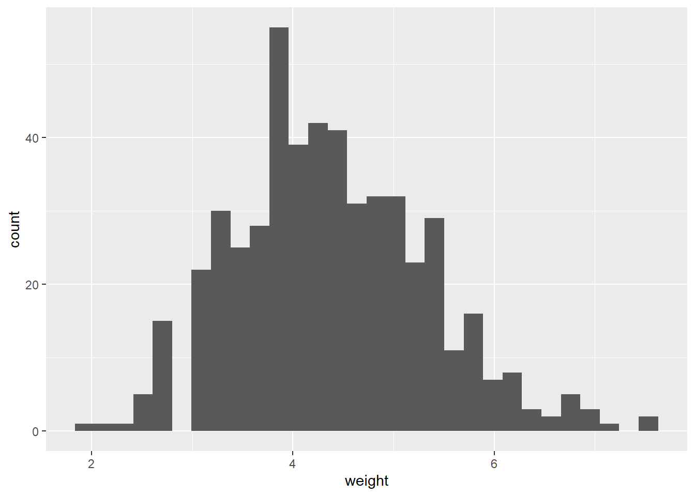
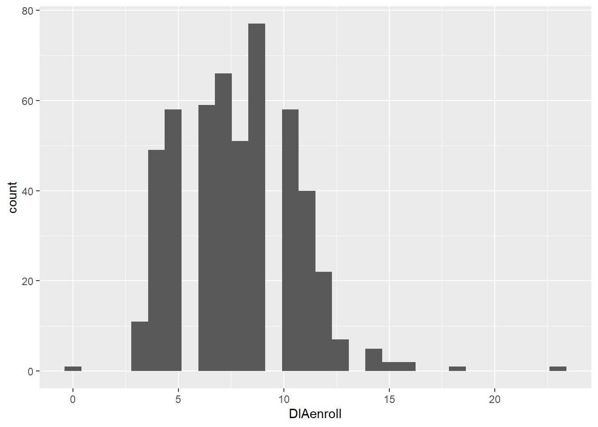

| Treatment | avgbwt | sdbwt | avgdia | sddia | avgewt | sdewt |
|---|---|---|---|---|---|---|
| Con | 3.38 | 0.51 | 7.80 | 2.69 | 4.31 | 1.00 |
| Trt | 3.41 | 0.51 | 7.82 | 2.81 | 4.39 | 0.94 |
# A tibble: 4 × 3
Treatment Sex n
<chr> <chr> <int>
1 Con B 3
2 Con D 251
3 Trt B 7
4 Trt D 249
Cell Contents
|-------------------------|
| N |
| Chi-square contribution |
| N / Table Total |
|-------------------------|
Total Observations in Table: 510
| new$Sex
new$Treatment | B | D | Row Total |
--------------|-----------|-----------|-----------|
Con | 3 | 251 | 254 |
| 0.787 | 0.016 | |
| 0.006 | 0.492 | |
--------------|-----------|-----------|-----------|
Trt | 7 | 249 | 256 |
| 0.781 | 0.016 | |
| 0.014 | 0.488 | |
--------------|-----------|-----------|-----------|
Column Total | 10 | 500 | 510 |
--------------|-----------|-----------|-----------|
Fisher's Exact Test for Count Data
------------------------------------------------------------
Sample estimate odds ratio: 0.4258138
Alternative hypothesis: true odds ratio is not equal to 1
p = 0.3389153
95% confidence interval: 0.07026562 1.891298
Alternative hypothesis: true odds ratio is less than 1
p = 0.1726744
95% confidence interval: 0 1.551156
Alternative hypothesis: true odds ratio is greater than 1
p = 0.9456688
95% confidence interval: 0.0939903 Inf
# A tibble: 10 × 3
Treatment Breed n
<chr> <chr> <int>
1 Con A 70
2 Con L 7
3 Con N 43
4 Con S 130
5 Con T 4
6 Trt A 73
7 Trt L 6
8 Trt N 49
9 Trt S 117
10 Trt T 11
Cell Contents
|-------------------------|
| N |
| Chi-square contribution |
| N / Table Total |
|-------------------------|
Total Observations in Table: 510
| new$Breed
new$Treatment | A | L | N | S | T | Row Total |
--------------|-----------|-----------|-----------|-----------|-----------|-----------|
Con | 70 | 7 | 43 | 130 | 4 | 254 |
| 0.021 | 0.043 | 0.174 | 0.397 | 1.612 | |
| 0.137 | 0.014 | 0.084 | 0.255 | 0.008 | |
--------------|-----------|-----------|-----------|-----------|-----------|-----------|
Trt | 73 | 6 | 49 | 117 | 11 | 256 |
| 0.021 | 0.042 | 0.172 | 0.393 | 1.600 | |
| 0.143 | 0.012 | 0.096 | 0.229 | 0.022 | |
--------------|-----------|-----------|-----------|-----------|-----------|-----------|
Column Total | 143 | 13 | 92 | 247 | 15 | 510 |
--------------|-----------|-----------|-----------|-----------|-----------|-----------|
Fisher's Exact Test for Count Data
------------------------------------------------------------
Alternative hypothesis: two.sided
p = 0.3492702
Welch Two Sample t-test
data: new$weight by new$Treatment
t = -0.94667, df = 505.3, p-value = 0.3443
alternative hypothesis: true difference in means between group Con and group Trt is not equal to 0
95 percent confidence interval:
-0.24960723 0.08727948
sample estimates:
mean in group Con mean in group Trt
4.311024 4.392188
Shapiro-Wilk normality test
data: new$weight
W = 0.97983, p-value = 1.665e-06`stat_bin()` using `bins = 30`. Pick better value with `binwidth`.
Welch Two Sample t-test
data: new$DIAenroll by new$Treatment
t = -0.1025, df = 507.36, p-value = 0.9184
alternative hypothesis: true difference in means between group Con and group Trt is not equal to 0
95 percent confidence interval:
-0.5042845 0.4542722
sample estimates:
mean in group Con mean in group Trt
7.799213 7.824219
Shapiro-Wilk normality test
data: new$DIAenroll
W = 0.96038, p-value = 1.758e-10`stat_bin()` using `bins = 30`. Pick better value with `binwidth`.